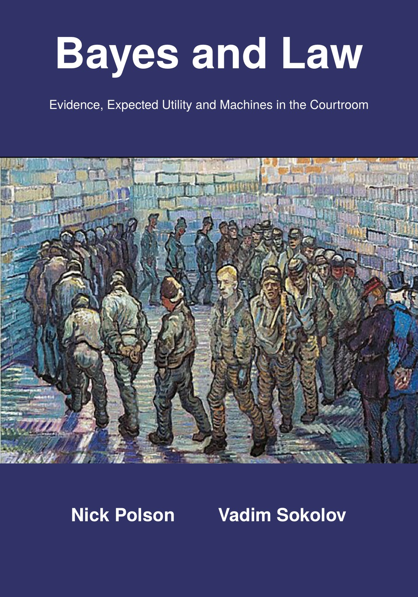

Bayes and Law Evidence, Expected Utility and Machines in the Courtroom
By Nick Polson and Vadim Sokolov.


Description
Every trial is reasoning under uncertainty. A jury weighs a smear of DNA and a confused witness; a judge asks whether an insurer would have written a policy had it been told the truth. This book argues that the law is already Bayesian in its bones, and that saying so makes legal reasoning clearer, fairer and cheaper. Written as a casebook for law students who have no statistics beyond school algebra, it teaches a reader to state a prior, compute a likelihood ratio, set a decision threshold from the costs of error, spot the fallacies, and explain each to a client, a jury and a judge. The first part builds the tools: odds and the weight of evidence, the island problem, Bayes factors, the prosecutor’s and defence fallacies, standards of proof as decision rules, and the rules of evidence read through Bayes. The second reads English tort, damages, misrepresentation, contract, family law, the collapse of Greensill Capital and bankruptcy as constraints on belief and action. The third covers stories, graphical models of evidence and the pleadings game. The fourth follows Stephen Fienberg and Jay Kadane into the courtroom and then statistics in discrimination, securities, medical, intellectual property and digital evidence cases. The fifth compares common and civil law, legal origins and finance, Africa, the Indian courts and arbitration. The sixth studies order without the state. The last turns to the economics of Becker and Murphy, antitrust, litigation funding, sentencing and regulation, then to machine checked law in Lean and Catala, Lindley’s challenge about machines that decide, explainable and fair algorithms, and a program for the law. Chapters have leading cases and Notes and Questions; appendices give a probability toolkit, code for the main calculations, a table of cases, solutions, a glossary, a semester plan and a sample examination.
How to cite
Polson and Sokolov (2026), Bayes and Law: Evidence, Expected Utility and Machines in the Courtroom, edition 1, https://doi.org/10.5281/zenodo.24138404.
@book{polsonsokolov2026bayes_law,
author = {Polson, Nick and Sokolov, Vadim},
title = {{Bayes and Law: Evidence, Expected Utility and Machines in the Courtroom}},
year = {2026},
publisher = {Independently published},
doi = {10.5281/zenodo.24138404},
url = {https://vsokolov.org/books/bayes_law/}
}License: Text, figures and PDF: CC BY 4.0. Code: MIT.
This page is generated from the book’s repository (main). The numbers and pages are those of the PDF, version 1.0.0.